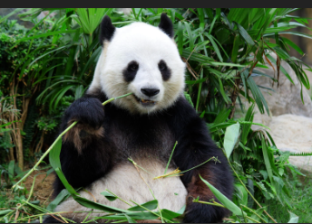
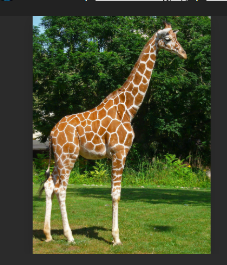

Este proyecto consiste en una tabla de HTML con diferentes animales, cada animal muestra su imagen e incluye una descripción corta.
| Animal | Descripción | Imagen |
|---|---|---|
| León | El león es un gran felino conocido como el rey de la selva. | |
| Delfín | El delfín común es un mamífero marino cuyo cuerpo es delgado y muy adaptado para nadar a alta velocidad. | |
| Panda | El panda gigante es un oso de China conocido por su pelaje blanco y negro y su amor por el bambú. |  |
| Jirafa | La jirafa es un mamífero africano y el animal terrestre más alto del mundo. |  |
| Pantera negra | La pantera negra es una variación de jaguares o leopardos con exceso de pigmentación oscura. | |